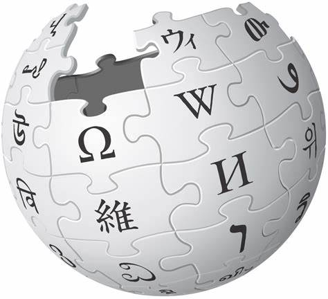

Entry
Edit
Random
WIKIPEDIA
The Free Encyclopedia

English
6,782,000+
articles
Русский
1 963 000+
статей
日本語
1,403,000+
記事
Español
1.930.000+
artículos
Deutsch
2.881.000+
Artikel
Français
2 590 000+
articles
Italiano
1.847.000+
voci
中文
1,403,000+
条目 / 條目
فارسی
۹۹۳٬۰۰۰+
مقاله
العربية
١٬٢٢٧٬٠٠٠+
مقالة
Read Wikipedia in your language